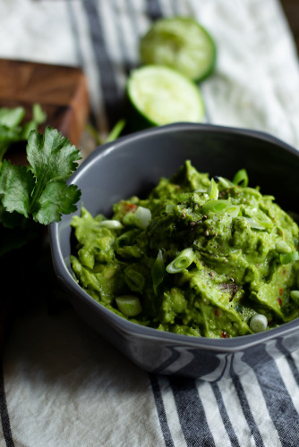

Guacamole*

photo source *thankfully, recipe creates larger portion
Description
This recipe for guacamole goes wonderfully on tortilla chips, omelettes, and toast!
Ingredients
- 3 medium or large avocados
- 1 roma tomato (diced)
- cilantro (a handful; chopped)
- 1/4 yellow sweet onion (diced)
- 2 cloves garlic (minced)
- 1/2 lime
- ground black pepper
- Optional: salt (pinch)
Steps
- Get medium sized mixing bowl, potato masher, fork, spoon, cutting board, and chef's knife
- Open avacados, remove pit, use spoon to scoop out innards into mixing bowl
- Cut lime in half and use fork to juice into mixing bowl
- Add pinch of salt (optional) and black pepper (to taste)
- Substitute black pepper with cayenne pepper if you like guacamole with a kick
- Use potato masher (or fork) to mix ingredients.
- Continue mashing until avacado mixture is at desired consistency (chunky versus smooth)
- Add tomato (diced), onion (diced), garlic (minced), and cilantro (chopped)
- Mix together with spoon
- For best results, let guacamole sit on counter or in fridge for 30 minutes to 1 hour to let flavors merry together.
Home